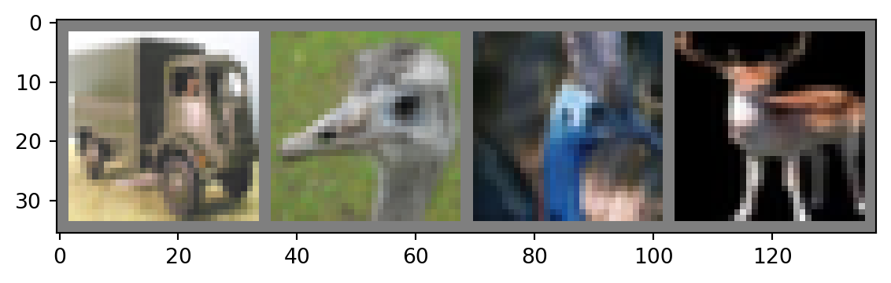
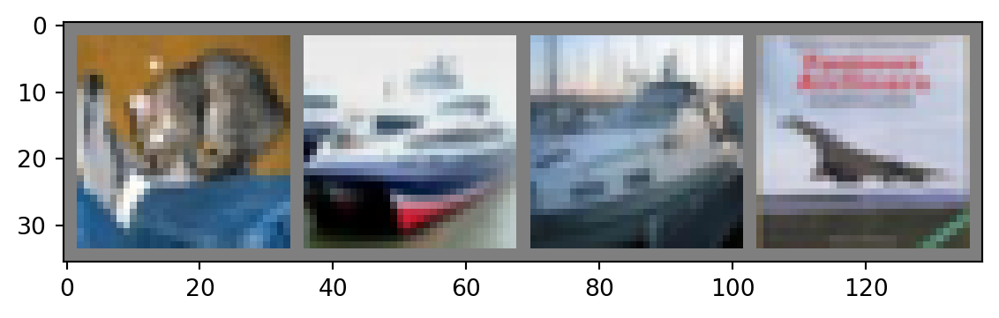

import torch
import torchvision
import torchvision.transforms as transformsOverall workflow
This classic PyTorch tutorial goes over the entire workflow to create and train a simple image classifier.
Let’s go over it step by step.
The data
CIFAR-10 from the Canadian Institute for Advanced Research is a classic dataset of 60,000 color images falling into 10 classes (6,000 images in each class):
- airplane
- automobile
- bird
- cat
- deer
- dog
- frog
- horse
- ship
- truck
The images are of size 32x32 pixels (tiny!), which makes it very lightweight, quick to load and easy to play with.
Create a DataLoader
A DataLoader is an iterable feeding data to a model at each iteration. The data loader transforms the data to the proper format, sets the batch size, whether the data is shuffled or not, and how the I/O is parallelized. You can create DataLoaders with the torch.utils.data.DataLoader class.
Let’s create 2 DataLoaders: one for the train set and one for the test set.
Load packages
Create a transform object
The CIFAR-10 images in the TorchVision library are Image objects (from the PIL.Image module of the pillow package).
We need to normalize them and turn them into tensors:
transform = transforms.Compose(
[transforms.ToTensor(),
transforms.Normalize((0.5, 0.5, 0.5), (0.5, 0.5, 0.5))])Choose a batch size
Remember that the data move forward through the network (forward pass), outputting some estimates which are used to calculate some loss (or error) value. Then we get gradients through automatic differentiation and the model parameters are adjusted a little through gradient descent.
You do not have to have the entire training set go through this process each time: you can use batches.
The batch size is the number of items from the data that are processed before the model is updated. There is no hard rule to set good batch sizes and sizes tend to be picked through trial and error.
Here are some rules to chose a batch size:
- make sure that the batch fits in the CPU or GPU,
- small batches give faster results (each training iteration is very fast), but give less accuracy,
- large batches lead to slower training, but better accuracy.
Let’s set the batch size to 4:
batch_size = 4Put it together into DataLoaders
trainset = torchvision.datasets.CIFAR10(root='./data',
train=True,
download=True,
transform=transform)
trainloader = torch.utils.data.DataLoader(trainset,
batch_size=batch_size,
shuffle=True,
num_workers=2)
testset = torchvision.datasets.CIFAR10(root='./data',
train=False,
download=True,
transform=transform)
testloader = torch.utils.data.DataLoader(testset,
batch_size=batch_size,
shuffle=False,
num_workers=2)We will also need the classes:
classes = ('plane', 'car', 'bird', 'cat', 'deer',
'dog', 'frog', 'horse', 'ship', 'truck')Visualize a sample of the data
Though not necessary, it can be useful to have a look at the data:
# Load the packages for this
import matplotlib.pyplot as plt
import numpy as np
# Define a function to display an image
def imshow(img):
img = img / 2 + 0.5 # unnormalize
npimg = img.numpy()
plt.imshow(np.transpose(npimg, (1, 2, 0)))
plt.show()
# Get a batch of random training images
dataiter = iter(trainloader)
images, labels = next(dataiter)
# Display the images
imshow(torchvision.utils.make_grid(images))
# Print the labels
print(' '.join(f'{classes[labels[j]]:5s}' for j in range(batch_size)))
truck bird bird deer The model
Architecture
First, we need to define the architecture of the network. There are many types of architectures. For images, CNN are well suited.
In Python, you can define a subclass of an existing class with:
class YourSubclass(BaseClass):
<definition of your subclass> The subclass is derived from the base class and inherits its properties. PyTorch contains the class torch.nn.Module which is used as the base class when defining a neural network.
import torch.nn as nn
import torch.nn.functional as F
class Net(nn.Module):
# Define the architecture of the network
def __init__(self):
super().__init__()
# 3 input image channel (3 colour channels)
# 6 output channels,
# 5x5 square convolution kernel
self.conv1 = nn.Conv2d(3, 6, 5)
# Max pooling over a (2, 2) window
self.pool = nn.MaxPool2d(2, 2)
self.conv2 = nn.Conv2d(6, 16, 5)
# 5*5 from image dimension
self.fc1 = nn.Linear(16 * 5 * 5, 120)
self.fc2 = nn.Linear(120, 84)
# 10 is the size of the output layer
# since there are 10 classes
self.fc3 = nn.Linear(84, 10)
# Set the flow of data through the network for the forward pass
# x represents the data
def forward(self, x):
# F.relu is the rectified-linear activation function
x = self.pool(F.relu(self.conv1(x)))
x = self.pool(F.relu(self.conv2(x)))
# flatten all dimensions except the batch dimension
x = torch.flatten(x, 1)
x = F.relu(self.fc1(x))
x = F.relu(self.fc2(x))
x = self.fc3(x)
return xLet’s create an instance of Net and print its structure:
net = Net()
print(net)Net(
(conv1): Conv2d(3, 6, kernel_size=(5, 5), stride=(1, 1))
(pool): MaxPool2d(kernel_size=2, stride=2, padding=0, dilation=1, ceil_mode=False)
(conv2): Conv2d(6, 16, kernel_size=(5, 5), stride=(1, 1))
(fc1): Linear(in_features=400, out_features=120, bias=True)
(fc2): Linear(in_features=120, out_features=84, bias=True)
(fc3): Linear(in_features=84, out_features=10, bias=True)
)Loss function and optimizer
We need to chose a loss function that will be used to calculate the gradients through backpropagation as well as an optimizer to do the gradient descent.
SGD with momentum has proved a very efficient optimizing technique and is widely used.
import torch.optim as optim
criterion = nn.CrossEntropyLoss()
optimizer = optim.SGD(net.parameters(), lr=0.001, momentum=0.9)Training
We can now train the model:
for epoch in range(2): # loop over the dataset twice
running_loss = 0.0
for i, data in enumerate(trainloader, 0):
# get the inputs; data is a list of [inputs, labels]
inputs, labels = data
# zero the parameter gradients
optimizer.zero_grad()
# forward + backward + optimize
outputs = net(inputs)
loss = criterion(outputs, labels)
loss.backward()
optimizer.step()
# print statistics
running_loss += loss.item()
if i % 2000 == 1999: # print every 2000 mini-batches
print(f'[{epoch + 1}, {i + 1:5d}] loss: {running_loss / 2000:.3f}')
running_loss = 0.0
print('Finished Training')[1, 2000] loss: 2.178
[1, 4000] loss: 1.864
[1, 6000] loss: 1.655
[1, 8000] loss: 1.561
[1, 10000] loss: 1.501
[1, 12000] loss: 1.437
[2, 2000] loss: 1.377
[2, 4000] loss: 1.357
[2, 6000] loss: 1.336
[2, 8000] loss: 1.332
[2, 10000] loss: 1.285
[2, 12000] loss: 1.282
Finished TrainingTesting
Little test on one batch for fun
Let’s now test our model on one batch of testing data.
First, let’s get a batch of random testing data:
dataiter = iter(testloader)
images, labels = next(dataiter)Let’s display them and print their true labels:
imshow(torchvision.utils.make_grid(images))
print('Real: ', ' '.join(f'{classes[labels[j]]:5s}' for j in range(4)))
Real: cat ship ship planeNow, let’s run the same batch of testing images through our model:
outputs = net(images)Let’s get the best predictions for these:
_, predicted = torch.max(outputs, 1)
print('Predicted: ', ' '.join(f'{classes[predicted[j]]:5s}'
for j in range(4)))Predicted: cat car ship planeMore serious testing
This was fun, but of course, with a sample of one, we can’t say anything about how good our model is. We need to test it on many more images from the test set.
Let’s use the entire test set:
correct = 0
total = 0
# since we're not training, we don't need to calculate the gradients for our outputs
with torch.no_grad():
for data in testloader:
images, labels = data
# calculate outputs by running images through the network
outputs = net(images)
# the class with the highest energy is what we choose as prediction
_, predicted = torch.max(outputs.data, 1)
total += labels.size(0)
correct += (predicted == labels).sum().item()
print(f'Accuracy of the network on the 10000 test images: {100 * correct // total} %')Accuracy of the network on the 10000 test images: 54 %Per class testing
We could see whether the model seem to perform better for some classes than others:
# prepare to count predictions for each class
correct_pred = {classname: 0 for classname in classes}
total_pred = {classname: 0 for classname in classes}
# again no gradients needed
with torch.no_grad():
for data in testloader:
images, labels = data
outputs = net(images)
_, predictions = torch.max(outputs, 1)
# collect the correct predictions for each class
for label, prediction in zip(labels, predictions):
if label == prediction:
correct_pred[classes[label]] += 1
total_pred[classes[label]] += 1
# print accuracy for each class
for classname, correct_count in correct_pred.items():
accuracy = 100 * float(correct_count) / total_pred[classname]
print(f'Accuracy for class: {classname:5s} is {accuracy:.1f} %')Accuracy for class: plane is 74.9 %
Accuracy for class: car is 70.8 %
Accuracy for class: bird is 52.2 %
Accuracy for class: cat is 34.9 %
Accuracy for class: deer is 46.3 %
Accuracy for class: dog is 28.0 %
Accuracy for class: frog is 66.8 %
Accuracy for class: horse is 55.3 %
Accuracy for class: ship is 70.9 %
Accuracy for class: truck is 47.7 %